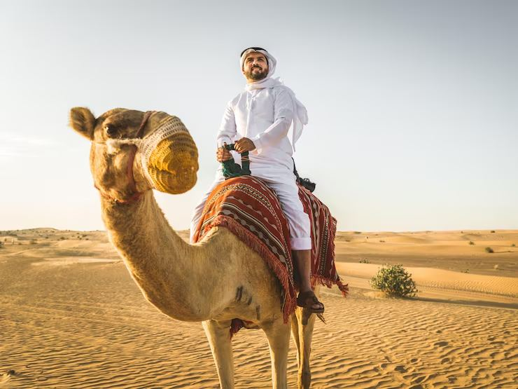
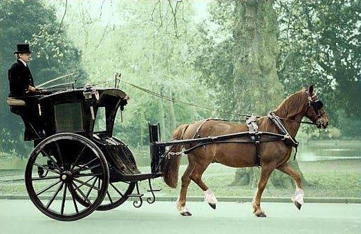

Aptis Speaking
Part 1: In this part, I am going to ask you three short questions about yourself and your interests. You will have 30 seconds to reply to each question.
1. Tell me about yourself and your interest.
=> my name is Ngoc. I am 40 years old and I am a doctor. I work for a hospital in my hometown. I am married and I have two children. In my free time, I love playing sport and reading books. I really enjoy my job because I can help sick people every day. On weekends, I like to relax by playing badminton with my family.
2. Tell me the best way to travel around your country.
=> The best way to travel around my country is by motorbike because it is affordable and convenient. People can save a lot of money for other things and they can go anywhere at any time. For example, I can stop anywhere to take photos or buy food on the way. It is also easy to find parking in the city.
3. Who is your favourite singer?
=> my favourite singer is My Tam. She is 40 years old and she is a famous singer in Vietnam. She is beautiful and friendly. Her voice is strong and warm. She has many fans. I often listen to her songs when I drive to work. Her music always makes me feel relaxed and happy.
Part 2: In this part, I'm going to ask you to describe a picture. Then I will ask you two questions about it. You will have 45 seconds for each response.
1. Describe the picture => In this picture, I can see a man and a boy. The man is about 40 and the boy is about 10. I think they are father and son. They are playing football in a park. They are wearing casual clothes and looks focused. Behind them I can see many trees. The weather is very nice. It is sunny and perfect for outdoor activities. I like this picture because it reminds me of my childhood. When I was small, I often played football with my father. It was really fun. |
2. What sport do you usually play, and how does it benefit you?
=> I usually play badminton. It is fun and useful. It helps me relax after a busy day and stay healthy. Besides, I can keep fit and prevent health problems. I usually play it twice a week with my colleagues after work. It also gives me a chance to meet new friends.
3. Why do many people like outdoor activities?
=> Many people like outdoor activities because they are interesting and good for their health. Also, they can enjoy fresh air and make friends. For example, walking in the park lets people feel more relaxed after a stressful day. It is also a good way to spend time with family.
Part 3: In this part, I'm going to ask you to compare two pictures, and I will then ask you two questions about them. You will have 45 seconds for each response.
1. Tell me what you can see in these two pictures.
 |
 |
=> The two pictures show people travelling in different ways.
In the first picture, I can see a man in a desert. He is riding a camel. The weather is very hot.
In the second picture, I can see a man in a forest. He is travelling with a horse. He is wearing formal clothes. In the picture, I can see a lot of trees and the weather is very nice. Both pictures show how people can travel in unusual ways. I think these experiences would be memorable for anyone who tries them.
2. What are the interesting points of the vehicle experience in the 2 ways of traveling above?
- both kinds of transport have different attractions, depending on people’s interests and situations. Some people like travelling with a camel because it is a new experience. Some people prefer travelling with a horse because it is faster. In deserts, people have to ride a camel to travel on the sand in hot weather. For example, tourists often want to try camel riding once in their life. It gives them an exciting story to share with their friends.
3. Should animals be treated like a means of transportation?
=> I don’t think animals should be treated like a means of transportation. Today we have many kinds of transport. They are faster and more convenient. Animals are weak and slow. Also, they are living things. They need protection. For example, riding animals for too long can make them tired and sick. I believe people should treat animals with more kindness.
Part 4: In this part, I'm going to show you a picture and ask you three questions. You will have one minute to think about your answers before you start speaking. You will have two minutes to answer all three questions.
Tell me about a time when you used technology to solve a problem.
What are the advantages of using technology in daily life?
Do you think people rely too much on technology nowadays? Why or why not?
=> Regarding the first question, today I'm going to talk about a time when I used technology to solve a problem. Last month, my computer stopped working. I watched a video on the Internet and fixed the problem by myself. I felt very proud that I could fix it without calling anyone. It saved me both time and money.
Turning to the second question, technology makes our daily life easier. It helps people study, work and communicate more quickly. For example, people can now work from home and still stay connected with their colleagues.
About the last question, I think some people rely too much on technology because they use it all the time. However, technology is still very useful if people use it wisely. I try to limit my own phone use, especially before going to bed.